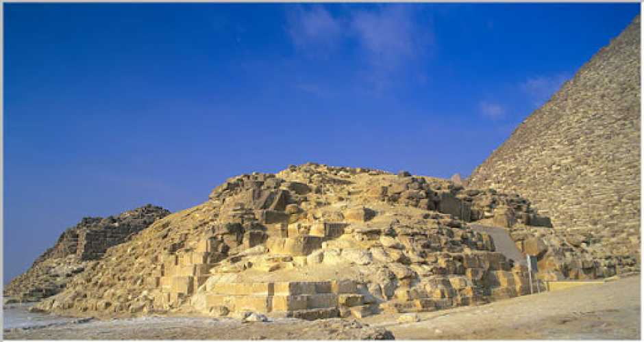

pyramyds
Discover the bucket-list sights of the Great Pyramid, the Giza Necropolis, ancient tombs and the Sphinx with the help of a local tourHQ guide to Giza, Egypt.jpeg)
Cairo tower
The Cairo Tower (Egyptian Arabic Borg El-Qāhira) is a free-standing concrete tower in CairoEgypt. At 187m(614 ft), it was the tallest structure in Egypt for 37 years until 1998when it was surpassed by the Suez Canal overhead powerline crossing..jpeg)
Egyptian Museum
The Grand Egyptian Museum also known as the Giza Museum, is an archaeological museum under construction in Giza, Egypt. It will house artifacts of ancient Egypt, including the complete Tutankhamun collection, and is set to be the largest archaeological museum in the world.
TOMB OF QUEEN MERESANKH III
Meresankh III’s tomb and ornate black granite sarcophagus were provided by her mother Hetepheres II. Studies by anthropologists suggest the queen suffers from bilateral silent sinus syndromeTHE BOAT MUSEUM OF CHEOPS
The Solar bark was discovered in a pit on the south side of the Great Pyramid. It has been reassembled ( from more than 600 original pieces) near the spot of its discovery, It measures more than 42 m in length and 5 meters in width
